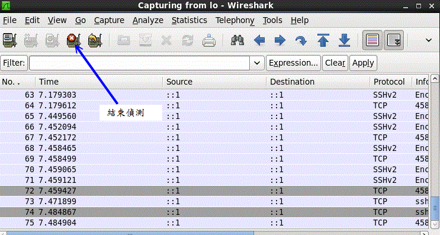

5.5 封包撷取功能
很多时候由于我们的网络联机出现问题，使用类似 ping 的软件功能却又无法找出问题点，最常见的是因为路由与 IP 转递后所产生的一些困扰 (请参考防火墙与 NAT 主机部分)，这个时候要怎么办？最简单的方法就是『分析封包的流向』啰！透过分析封包的流向，我们可以了解一条联机应该是如何进行双向的联机的动作， 也就会清楚的了解到可能发生的问题所在了！底下我们就来谈一谈这个 tcpdump 与图形接口的封包分析软件吧！
5.5.1 文字接口封包撷取器： tcpdump
说实在的，对于 tcpdump 这个软件来说，你甚至可以说这个软件其实就是个黑客软件， 因为他不但可以分析封包的流向，连封包的内容也可以进行『监听』， 如果你使用的传输数据是明码的话，不得了，在 router 或 hub 上面就可能被人家监听走了！ 我们在第二章谈到的 CSMA/CD 流程中，不是说过有所谓的『监听软件』吗？这个 tcpdump 就是啦！ 很可怕吶！所以，我们也要来了解一下这个软件啊！(注：这个 tcpdump 必须使用 root 的身份执行)
[root@www ~]# tcpdump [-AennqX] [-i 接口] [-w 储存档名] [-c 次数] \
[-r 档案] [所欲撷取的封包数据格式]
选项与参数：
-A ：封包的内容以 ASCII 显示，通常用来捉取 WWW 的网页封包资料。
-e ：使用资料连接层 (OSI 第二层) 的 MAC 封包数据来显示；
-nn：直接以 IP 及 port number 显示，而非主机名与服务名称
-q ：仅列出较为简短的封包信息，每一行的内容比较精简
-X ：可以列出十六进制 (hex) 以及 ASCII 的封包内容，对于监听封包内容很有用
-i ：后面接要『监听』的网络接口，例如 eth0, lo, ppp0 等等的界面；
-w ：如果你要将监听所得的封包数据储存下来，用这个参数就对了！后面接档名
-r ：从后面接的档案将封包数据读出来。那个『档案』是已经存在的档案，
并且这个『档案』是由 -w 所制作出来的。
-c ：监听的封包数，如果没有这个参数， tcpdump 会持续不断的监听，
直到使用者输入 [ctrl]-c 为止。
所欲撷取的封包数据格式：我们可以专门针对某些通讯协议或者是 IP 来源进行封包撷取，
那就可以简化输出的结果，并取得最有用的信息。常见的表示方法有：
'host foo', 'host 127.0.0.1' ：针对单部主机来进行封包撷取
'net 192.168' ：针对某个网域来进行封包的撷取；
'src host 127.0.0.1' 'dst net 192.168'：同时加上来源(src)或目标(dst)限制
'tcp port 21'：还可以针对通讯协议侦测，如 tcp, udp, arp, ether 等
还可以利用 and 与 or 来进行封包数据的整合显示呢！
# 范例一：以 IP 与 port number 捉下 eth0 这个网络卡上的封包，持续 3 秒
[root@www ~]# tcpdump -i eth0 -nn
tcpdump: verbose output suppressed, use -v or -vv for full protocol decode
listening on eth0, link-type EN10MB (Ethernet), capture size 65535 bytes
17:01:47.360523 IP 192.168.1.101.1937 > 192.168.1.100.22: Flags [.], ack 196, win 65219,
<u>17:01:47.362139 IP 192.168.1.100.22 > 192.168.1.101.1937: Flags [P.], seq 196:472, ack 1,</u>
17:01:47.363201 IP 192.168.1.100.22 > 192.168.1.101.1937: Flags [P.], seq 472:636, ack 1,
17:01:47.363328 IP 192.168.1.101.1937 > 192.168.1.100.22: Flags [.], ack 636, win 64779,
<==按下 [ctrl]-c 之后结束
6680 packets captured <==捉下来的封包数量
14250 packets received by filter <==由过滤所得的总封包数量
7512 packets dropped by kernel <==被核心所丢弃的封包
如果你是第一次看 tcpdump 的 man page 时，肯定一个头两个大，因为 tcpdump 几乎都是分析封包的表头数据，用户如果没有简易的网络封包基础，要看懂粉难吶！ 所以，至少你得要回到网络基础里面去将 TCP 封包的表头资料理解理解才好啊！ ^_^！至于那个范例一所产生的输出范例中，我们可以约略区分为数个字段， 我们以范例一当中那个特殊字体行来说明一下：
- 17:01:47.362139：这个是此封包被撷取的时间，『时:分:秒』的单位；
- IP：透过的通讯协议是 IP ；
- 192.168.1.100.22 > ：传送端是 192.168.1.100 这个 IP，而传送的 port number 为 22，你必须要了解的是，那个大于 (>) 的符号指的是封包的传输方向喔！
- 192.168.1.101.1937：接收端的 IP 是 192.168.1.101， 且该主机开启 port 1937 来接收；
- [P.], seq 196:472：这个封包带有 PUSH 的数据传输标志， 且传输的数据为整体数据的 196~472 byte；
- ack 1：ACK 的相关资料。
最简单的说法，就是该封包是由 192.168.1.100 传到 192.168.1.101，透过的 port 是由 22 到 1937 ， 使用的是 PUSH 的旗标，而不是 SYN 之类的主动联机标志。呵呵！不容易看的懂吧！所以说，上头才讲请务必到 TCP 表头数据的部分去瞧一瞧的啊！
再来，一个网络状态很忙的主机上面，你想要取得某部主机对你联机的封包数据而已时， 使用 tcpdump 配合管线命令与正规表示法也可以，不过，毕竟不好捉取！ 我们可以透过 tcpdump 的表示法功能，就能够轻易的将所需要的数据独立的取出来。 在上面的范例一当中，我们仅针对 eth0 做监听，所以整个 eth0 接口上面的数据都会被显示到屏幕上， 不好分析啊！那么我们可以简化吗？例如只取出 port 21 的联机封包，可以这样做：
[root@www ~]# tcpdump -i eth0 -nn port 21
tcpdump: verbose output suppressed, use -v or -vv for full protocol decode
listening on eth0, link-type EN10MB (Ethernet), capture size 96 bytes
01:54:37.96 IP 192.168.1.101.1240 > 192.168.1.100.21: . ack 1 win 65535
01:54:37.96 IP 192.168.1.100.21 > 192.168.1.101.1240: P 1:21(20) ack 1 win 5840
01:54:38.12 IP 192.168.1.101.1240 > 192.168.1.100.21: . ack 21 win 65515
01:54:42.79 IP 192.168.1.101.1240 > 192.168.1.100.21: P 1:17(16) ack 21 win 65515
01:54:42.79 IP 192.168.1.100.21 > 192.168.1.101.1240: . ack 17 win 5840
01:54:42.79 IP 192.168.1.100.21 > 192.168.1.101.1240: P 21:55(34) ack 17 win 5840
瞧！这样就仅提出 port 21 的信息而已，且仔细看的话，你会发现封包的传递都是双向的， client 端发出『要求』而 server 端则予以『响应』，所以，当然是有去有回啊！ 而我们也就可以经过这个封包的流向来了解到封包运作的过程。举例来说：
- 我们先在一个终端机窗口输入『 tcpdump -i lo -nn 』 的监听，
- 再另开一个终端机窗口来对本机 (127.0.0.1) 登入『ssh localhost』
那么输出的结果会是如何？
[root@www ~]# tcpdump -i lo -nn
1 tcpdump: verbose output suppressed, use -v or -vv for full protocol decode
2 listening on lo, link-type EN10MB (Ethernet), capture size 96 bytes
3 11:02:54.253777 IP 127.0.0.1.32936 > 127.0.0.1.22: S 933696132:933696132(0)
win 32767 <mss 16396,sackOK,timestamp 236681316 0,nop,wscale 2>
4 11:02:54.253831 IP 127.0.0.1.22 > 127.0.0.1.32936: S 920046702:920046702(0)
ack 933696133 win 32767 <mss 16396,sackOK,timestamp 236681316 236681316,nop,
wscale 2>
5 11:02:54.253871 IP 127.0.0.1.32936 > 127.0.0.1.22: . ack 1 win 8192 <nop,
nop,timestamp 236681316 236681316>
6 11:02:54.272124 IP 127.0.0.1.22 > 127.0.0.1.32936: P 1:23(22) ack 1 win 8192
<nop,nop,timestamp 236681334 236681316>
7 11:02:54.272375 IP 127.0.0.1.32936 > 127.0.0.1.22: . ack 23 win 8192 <nop,
nop,timestamp 236681334 236681334>
上表显示的头两行是 tcpdump 的基本说明，然后：
- 第 3 行显示的是『来自 client 端，带有 SYN 主动联机的封包』，
- 第 4 行显示的是『来自 server 端，除了响应 client 端之外(ACK)，还带有 SYN 主动联机的标志；
- 第 5 行则显示 client 端响应 server 确定联机建立 (ACK)
- 第 6 行以后则开始进入数据传输的步骤。
从第 3-5 行的流程来看，熟不熟悉啊？没错！那就是三向交握的基础流程啦！够有趣吧！ 不过 tcpdump 之所以被称为黑客软件之一可不止上头介绍的功能吶！ 上面介绍的功能可以用来作为我们主机的封包联机与传输的流程分析， 这将有助于我们了解到封包的运作，同时了解到主机的防火墙设定规则是否有需要修订的地方。
更神奇的使用要来啦！如果我们使用 tcpdump 在 router 上面监听『明码』的传输数据时， 例如 FTP 传输协议，你觉得会发生什么问题呢？ 我们先在主机端下达『 tcpdump -i lo port 21 -nn -X 』然后再以 ftp 登入本机，并输入账号与密码， 结果你就可以发现如下的状况：
[root@www ~]# tcpdump -i lo -nn -X 'port 21'
0x0000: 4500 0048 2a28 4000 4006 1286 7f00 0001 E..H*(@.@.......
0x0010: 7f00 0001 0015 80ab 8355 2149 835c d825 .........U!I.\.%
0x0020: 8018 2000 fe3c 0000 0101 080a 0e2e 0b67 .....<.........g
0x0030: 0e2e 0b61 3232 3020 2876 7346 5450 6420 ...a220.(vsFTPd.
0x0040: 322e 302e 3129 0d0a 2.0.1)..
0x0000: 4510 0041 d34b 4000 4006 6959 7f00 0001 E..A.K@.@.iY....
0x0010: 7f00 0001 80ab 0015 835c d825 8355 215d .........\.%.U!]
0x0020: 8018 2000 fe35 0000 0101 080a 0e2e 1b37 .....5.........7
0x0030: 0e2e 0b67 5553 4552 2064 6d74 7361 690d ...gUSER.dmtsai.
0x0040: 0a .
0x0000: 4510 004a d34f 4000 4006 694c 7f00 0001 E..J.O@.@.iL....
0x0010: 7f00 0001 80ab 0015 835c d832 8355 217f .........\.2.U!.
0x0020: 8018 2000 fe3e 0000 0101 080a 0e2e 3227 .....>........2'
0x0030: 0e2e 1b38 5041 5353 206d 7970 6173 7377 ...8PASS.mypassw
0x0040: 6f72 6469 7379 6f75 0d0a ordisyou..
上面的输出结果已经被简化过了，你必须要自行在你的输出结果当中搜寻相关的字符串才行。 从上面输出结果的特殊字体中，我们可以发现『该 FTP 软件使用的是 vsftpd ，并且使用者输入 dmtsai 这个账号名称，且密码是 mypasswordisyou』 嘿嘿！你说可不可怕啊！如果使用的是明码的方式来传输你的网络数据？ 所以我们才常常在讲啊，网络是很不安全滴！
另外你得了解，为了让网络接口可以让 tcpdump 监听，所以执行 tcpdump 时网络接口会启动在 『错乱模式 (promiscuous)』，所以你会在 /var/log/messages 里面看到很多的警告讯息， 通知你说你的网络卡被设定成为错乱模式！别担心，那是正常的。至于更多的应用，请参考 man tcpdump 啰！
例题：如何使用 tcpdump 监听 (1)来自 eth0 适配卡且 (2)通讯协议为 port 22 ，(3)封包来源为 192.168.1.101 的封包资料？答：tcpdump -i eth0 -nn 'port 22 and src host 192.168.1.101'
5.5.2 图形接口封包撷取器： wireshark
tcpdump 是文字接口的封包撷取器，那么有没有图形接口的？有啊！那就是 wireshark (注1) 这套软件。这套软件早期称为 ethereal ，目前同时提供文字接口的 tethereal 以及图形接口的 wireshark 两个咚咚。由于我们当初安装时预设并没有装这套，因此妳必须要先使用 yum 去网络安装喔！也可以拿出光盘来安装啦！有两套需要安装，分别是文字接口的 wireshark 以及图形接口的 wireshark-gnome 软件。安装方式如下：
[root@www ~]# yum install wireshark wireshark-gnome
启动这套软件的方法很简单，你必须要在 X Window 底下，透过『应用程序』-->『因特网』-->『wireshark network analyzer』就可以启动啦！启动的画面如下所示：
 图 5.5-1、wireshark 的使用示意图
图 5.5-1、wireshark 的使用示意图
其实这一套软件功能非常强大！鸟哥这里仅讲简单的用法，若有特殊需求，就得要自己找找数据啰。 想要开始撷取封包前，得要设定一下监听的接口之类的，因此点选图 5.5-1 画面中的网络卡小图标吧！ 就会出现如下的画面给你选择了。
图 5.5-2、wireshark 的使用示意图
在上图中，你得先选择想要监听的接口，鸟哥这里因为担心外部的封包太多导致画面很乱，因此这里使用内部的 lo 接口来作为范例。你得要注意， lo 平时是很安静的！所以，鸟哥在点选了『start』之后，还有打开终端机， 之后使用『 ssh localhost 』来尝试登入自己，这样才能够获得封包喔！如下图所示：
 图 5.5-3、wireshark 的使用示意图
若没有问题，等到你撷取了足够的封包想要进行分析之后，按下图 5.5-3 画面中的停止小图示，那么封包撷取的动作就会终止， 接下来，就让我们来开始分析一下封包吧！
 图 5.5-4、wireshark 的使用示意图
图 5.5-4、wireshark 的使用示意图
整个分析的画面如上所示，画面总共分为三大区块，你可以将鼠标光标移动到每个区块中间的移动棒， 就可以调整每个区块的范围大小了。第一区块主要显示的是封包的标头资料，内容就有点类似 tcpdump 的显示结果，第二区块则是详细的表头资料，包括讯框的内容、通讯协议的内容以及 socket pair 等等信息。 第三区块则是 16 进位与 ASCII 码的显示结果 (详细的封包内容)。
如果你觉得某个封包有问题，在画面 1 的地方点选该封包 (图例中是第 6 个封包)，那么画面 2 与 3 就会跟着变动！由于鸟哥测试的封包是加密数据的封包，因此画面 2 显示出封包表头，但画面 3 的封包内容就是乱码啦！ 透过这个 wireshark 你就可以一口气得到所需要的所有封包内容啦！而且还是图形接口的，很方便吧！
5.5.3 任意启动 TCP/UDP 封包的埠口联机： nc, netcat
这个 nc 指令可以用来作为某些服务的检测，因为他可以连接到某个 port 来进行沟通，此外，还可以自行启动一个 port 来倾听其他用户的联机吶！非常的不错用！如果在编译 nc 软件的时候给予『GAPING_SECURITY_HOLE』参数的话，嘿嘿！ 这个软件还可以用来取得客户端的 bash 哩！可怕吧！我们的 CentOS 预设并没有给予上面的参数， 所以我们不能够用来作为黑客软件～但是 nc 用来取代 telnet 也是个很棒的功能了！(有的系统将执行文件 nc 改名为 netcat 啦！)
[root@www ~]# nc [-u] [IP|host] [port]
[root@www ~]# nc -l [IP|host] [port]
选项与参数：
-l ：作为监听之用，亦即开启一个 port 来监听用户的联机；
-u ：不使用 TCP 而是使用 UDP 作为联机的封包状态
# 范例一：与 telnet 类似，连接本地端的 port 25 查阅相关讯息
[root@www ~]# yum install nc
[root@www ~]# nc localhost 25
这个最简单的功能与 telnet 几乎一样吧！可以去检查某个服务啦！不过，更神奇的在后面， 我们可以建立两个联机来传讯喔！举个例子来说，我们先在服务器端启动一个 port 来进行倾听：
# 范例二：激活一个 port 20000 来监听使用者的联机要求
[root@www ~]# nc -l localhost 20000 &
[root@www ~]# netstat -tlunp | grep nc
tcp 0 0 ::1:20000 :::* LISTEN 5433/nc
# 启动一个 port 20000 在本机上！
接下来你再开另外一个终端机来看看，也利用 nc 来联机服务器，并且输入一些指令看看喔！
[root@www ~]# nc localhost 20000
<==这里可以开始输入字符串了！
此时，在客户端我们可以打入一些字，你会发现在服务器端会同时出现你输入的字眼吶！ 如果你同时给予一些额外的参数，例如利用标准输入与输出 (stdout, stdin) 的话，那么就可以透过这个联机来作很多事情了！ 当然 nc 的功能不只如此，你还可以发现很多的用途喔！ 请自行到你主机内的 /usr/share/doc/nc-1.84/scripts/ 目录下看看这些 script ，有帮助的吶！ 不过，如果你需要额外的编译出含有 GAPING_SECURITY_HOLE 功能， 以使两端联机可以进行额外指令的执行时，就得要自行下载原始码来编译了！